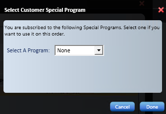
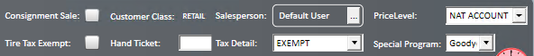
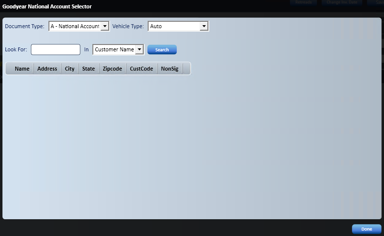
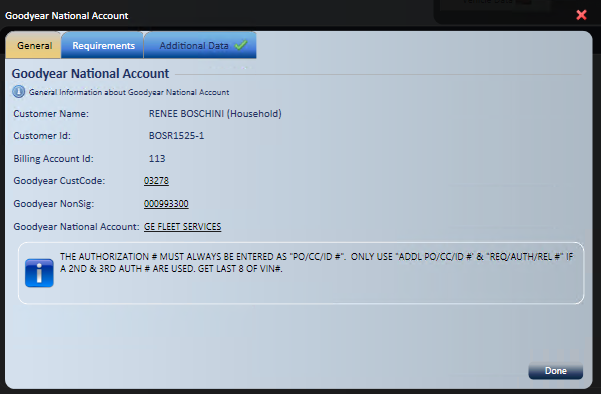
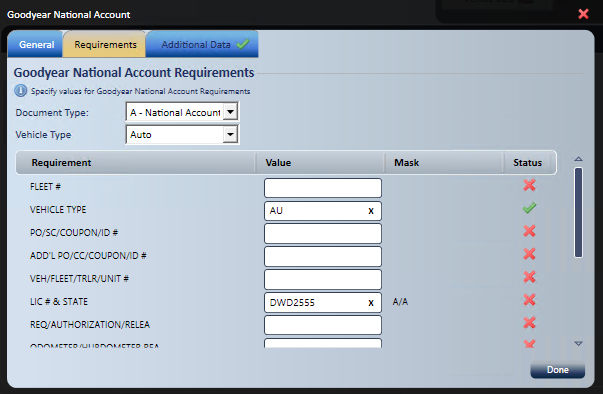
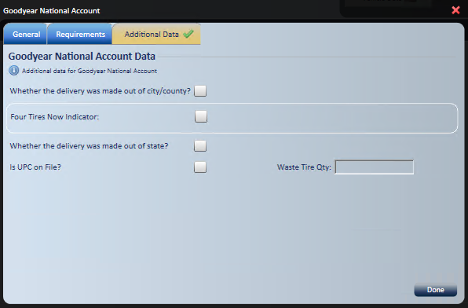
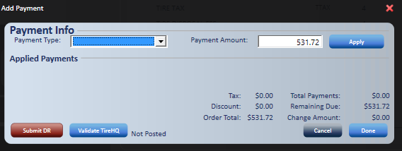
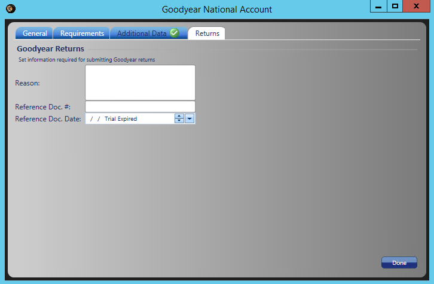

Goodyear National Account, P&R, Secondary Supply or Government Processing
Use Goodyear National Account processing to submit Goodyear transactions directly to the manufacturer automatically, while the sale stays on the customer's account for easy tracking of customer and vehicle data. The same process covers the P&R, Secondary Supply, and Government special programs.
Note: For Bridgestone Firestone national accounts, see Bridgestone Firestone National Accounts (TreadNet).
Create a Goodyear National Account order
- Start a new Service Request and continue as you would for any service request.
- If the customer was previously invoiced as a national account, a window asks you to select the customer's special program.

-
- If the program is correct, select Done.
- If the program is wrong, select the right program, then select Done.
- To use no program, select Cancel. The program defaults to None.
- Select the vehicle, then select Done.
- By default, a Goodyear National Account order uses Goodyear NA as the special program. The price level defaults to the desired price level, and tax detail and tire tax change to exempt.

- If this is the customer's first National Account order, select Goodyear NA in the header record FIRST.
- The Goodyear National Account Selector opens.

- Verify the Document Type is correct. It defaults based on the Special Program selected, and the account search uses the Document Type you select.
- Verify the Vehicle type, and change it from the drop-down if needed.
- Enter the National Account name or customer code in Look For.
- In In, select Customer Name or Customer Code.
- Select Search.
- Select the National Account.
- To leave without choosing an account, close the window with the X. A warning explains that a Goodyear Special Program order needs a National Account. Select OK to close and set the Special Program back to None, or Cancel to go back to the selector.
- Select the Goodyear icon that now shows on the service request.
- Everything in this window is stored with the customer's information and filled in each time a service request is created. Some requirements are specific to the order and need to be filled in on each new service request.
Complete the Goodyear tabs
General tab: Shows customer information, billing account information, Goodyear Customer Code, NonSig, and National Account Name.

For the Secondary Supply special program, the General tab has a requirement:
- At Goodyear Customer Code (Ship-To), select the Assign icon.
- Enter the customer name or store number, if applicable.
- Select the customer.
- The Ship-To field fills in.
- Select Done.
Note: You can change National Account information by selecting any of the underlined fields.
Requirements tab: Lists all the information required for a successful submission.

- Verify the Document and Vehicle Type.
- Fill in the Requirement Values. Letters MUST be upper case.
- The Mask column shows the field format required.
- Verify that the Status column shows all green check marks.
- Select Done.
Additional Data tab: Holds additional data that isn't required and generally isn't needed. If required data is missing, a red X shows on the tab.

For the P&R special program, the Additional Data tab needs more data:
- Select the Manufacturer default.
- At PR Code, select the Lookup icon.
- Verify the Manufacturer and enter the dealership name.
- Select Lookup.
- Select the correct dealership, then select Done.
- The Customer Code, Name, and NonSig number fill in on the tab and are copied into Ship-to on the General tab.
For the Government special program, the Additional Data tab needs more data:
- Select the proper document indicator, then select Done.
- The red X is replaced with a green check mark.
Add items to a Goodyear order
Add items to the service request as needed, following these rules.
Important: Tires: Change the tire package to a Goodyear Passenger, Light Truck, or Commercial tire package, either on the quote screen or in Add Items, before adding it to the service request.
Important: Packages: Select a GY package, if applicable, so the order gets proper credit from the manufacturer.
GY Tire Packages: When added, show an extra column with the Goodyear Product Number on each line of the package, matched to the in-house item numbers.
- Tire Tax: Blank, and not submitted to the manufacturer.
- Road Hazard: For order validation, every order must have an approve or a decline to process. Road Hazard is also skipped for manufacturer processing.
- All other line items: Must have a GY reference number. If one is missing, select the product column of that row and fill it in.
GY Service Packages: When added, also show an extra column with the Goodyear Product Number on each line of the package, matched to the in-house item numbers.
- All line items: Must have a GY reference number. If one is missing, select the product column of that row and fill it in.
Note: Oil packages must have the correct GY product code assigned to the additional oil surcharge (1/2 Quart or Full Quart).
Individual items: GY individual item numbers aren't used. Use the in-house item number so inventory is relieved. Every in-house item number is referenced to a Goodyear Product Number.
- All line items: Must have a GY reference number. If one is missing, select the product column of that row and fill it in.
Validate and invoice a Goodyear order

- Select Validate TireHQ. This MUST be done before you accept payment.
- If the order has everything required for processing, a message confirms the validation succeeded.
- If the order is missing requirements, a message directs you to the items that need correcting.
- After a successful validation, select the payment type.
- Apply the payment.
- Select Done.
- The amount due shows $0.
- Continue when prompted, after you verify the $0 balance due.
- The invoice displays for printing or emailing.
- At invoicing, the order is submitted to the manufacturer automatically.
Note: Government accounts with service use 000000000 as the GY product code to bypass TireHQ submission.
Return a Goodyear National Account order
Goodyear National Account returns work the same way as a sale, with a few exceptions.
- Create a sales order as you would for a new sale.
- BEFORE you select the Goodyear icon , add the items being returned.
- Enter a negative quantity. Don't enter negative dollar amounts.
- Open the Goodyear icon and fill in all tabs for the National Account Type selected.
- The Returns tab only shows when the order has a negative quantity.
- Fill in the Returns tab.
- Use the small arrows to change date segments, or the large arrow to pick a date from the calendar.

- Select WILL-CALL/PICKUP, or any ship method that doesn't involve shipment manager.
- Add the Reference Document Number in the order comments.
- Select Process to invoice the return.